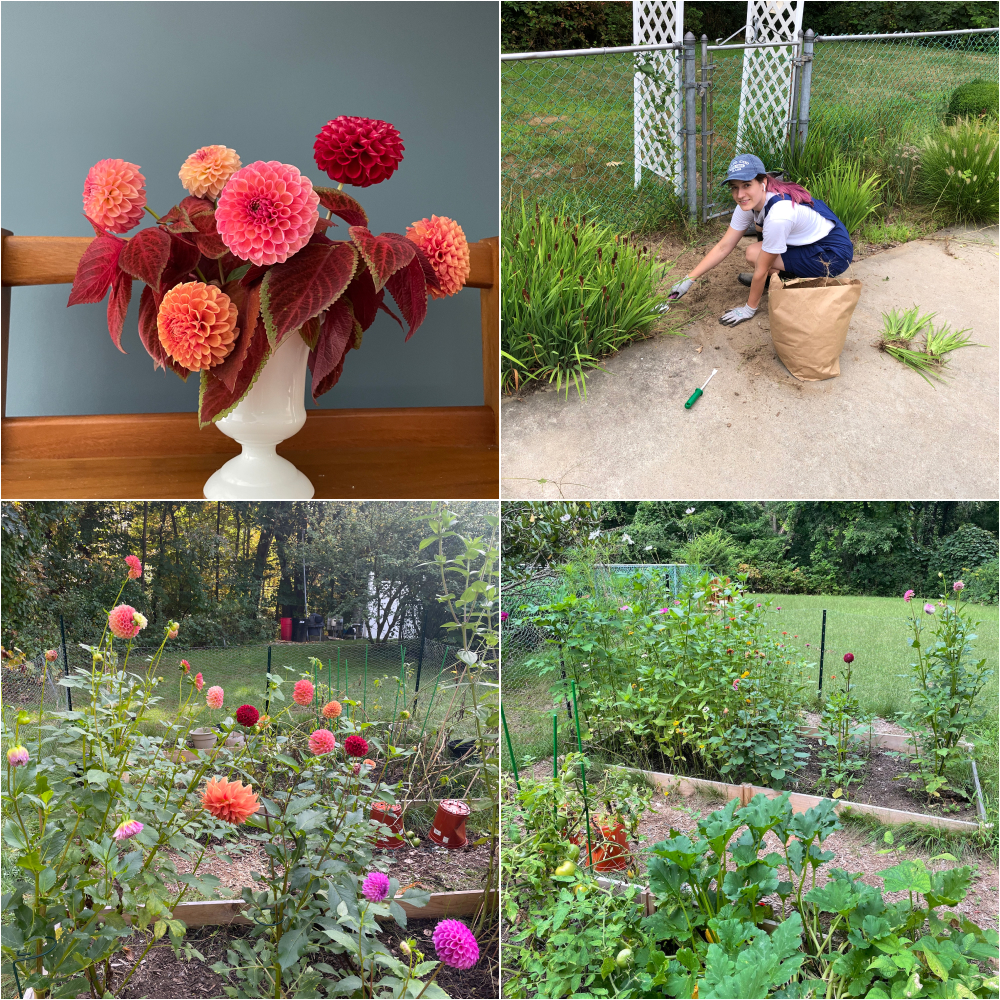
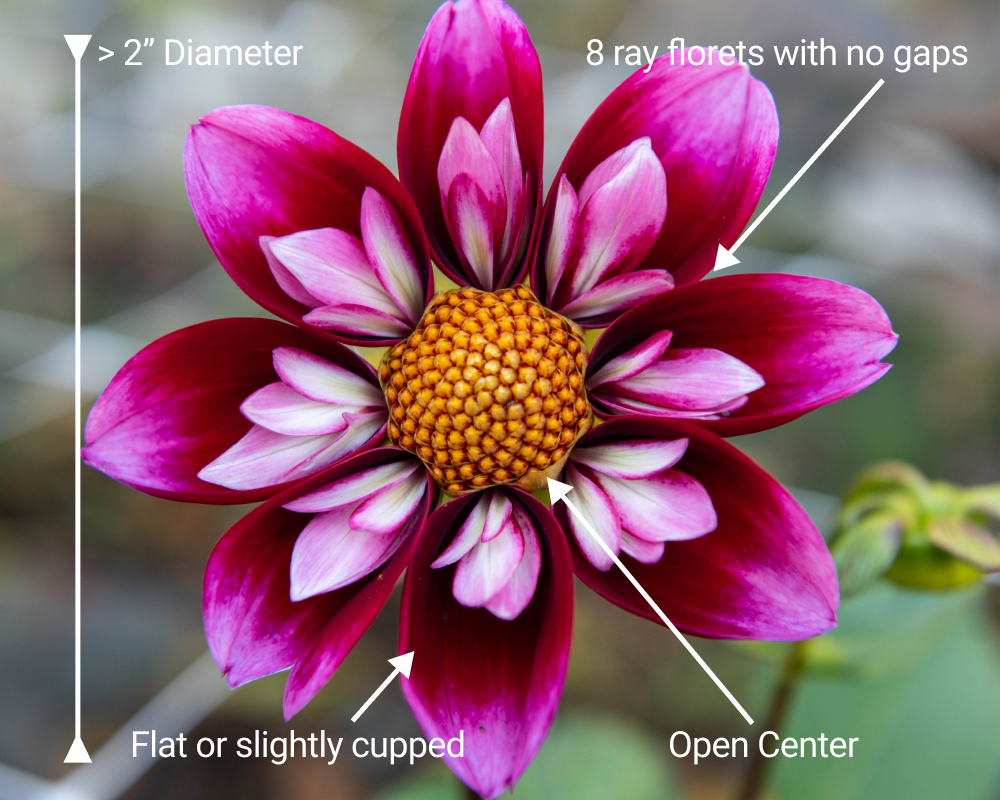
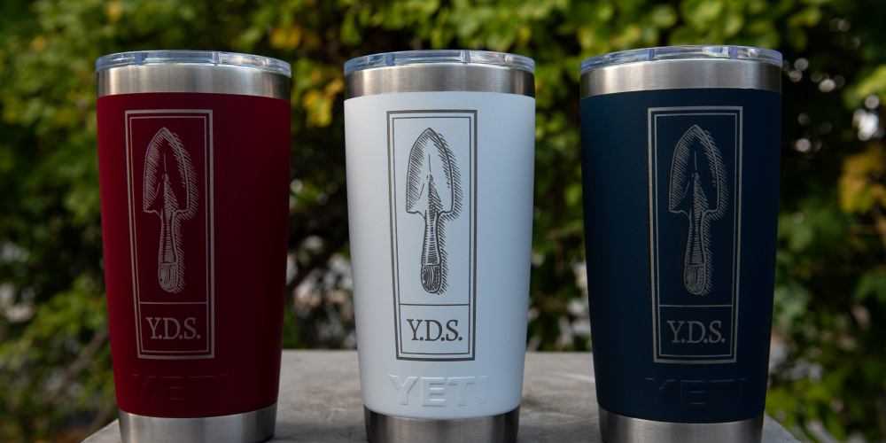

|
Hello dahlia friends!
Happy Thanksgiving!
We look back at 2021 and our first year as a
dahlia club and are so extremely grateful for
all the wonderful club members and memories we
have had together. We are all building an
amazing community of friendships around dahlias
and so much more. Thank you for all your
support! We are so excited for 2022!
It is finally getting cold and starting to feel
like winter. The weather in November was very
mild and so many of us enjoyed the few extra
weeks of dahlias this season and the extra time
to dig up tuber clumps. We started October 7th
and completely finished digging on November 16th
overall taking us six weeks to get every club
tuber at eight of our growing partner locations
out of the ground. We did lose some tubers due
to all the rain we had this spring, however we
started with a lot so we still have lots. We are
so grateful for the many clumps we have for the
club sale and to build upon club stock and grow
for 2022.
In lieu of an official club meetings for
November and December we created nine weeks
through early January to get together to show
beginners how to divide tuber clumps as well as
prepare for the club tuber sale. In our first
two weeks so much progress has been made in
dividing club tubers. Many of you have been able
to come out to volunteer and so many more have
signed up to come and help. We’ve clocked in
over 181 volunteer hours towards the
preparation!
As we move into the new year, we have lots of
fun meetings, events and happenings planned,
including an all things dahlia related raffle at
our New Year party in January. You won’t want to
miss it! Sign up for a Dividing Date for an in
person sneak peek at some of the cool swag we
will be raffling off. Tickets will be available
very soon.
Signup Genius Link
– Misty & Carol
|
|
Dahlias from the Garden of YDS Member

Allison Balik
"This was my first year having an outdoor
garden. I've always had indoor plants, but I
never had a yard or space for anything more
involved. We set up two 4 x 8 ft beds in our
backyard, one for vegetables and one for
flowers. Half of my flower garden was dedicated
to dahlias, and the other half was dedicated to
zinnias and a few other flower varieties. I also
have a garden surrounding our pool, which is
mostly ornamental flowers and plants.
Unfortunately, that garden is overcome by
invasive plants, but I've been slowly fighting
them over the past year. I am very tired of
yanking oriental bittersweet.
Gardening gives me an excuse to go outside and
dig around in the dirt. Growing up, my family
had a garden for plants that the deer wouldn't
eat, which left us with horseradish, mint, and
onions. I wasn't a fan of the produce, but I
remember spending a lot of time tromping around
in the dirt. Now, I get to do that again, this
time with vegetables I am excited to eat. Even
though I know it's silly, I find myself going
outside multiple times a day to see if anything
has changed in the garden. It's so satisfying to
see your efforts rewarded.
I've been wanting to grow dahlias ever since I
saw them at a farmer's market when I was in
college. One of the professors would set up a
stall and sell his blooms for 50-75 cents,
depending on the size of the flower. He'd watch
me spend a ridiculous amount of time debating on
which flower I wanted, and would laugh and tell
me to just take them for a discounted price. I
love how vibrant they are and how varied they
can be, even on the same plant. This year, I
grew ten dahlias and already have plans for
more. I waited a while to order some tubers, so
I have mostly ball varietes, but I am hoping to
get some different ones next season. I really
love the waterlily and decorative types, like
Cafe au lait. If you've ever seen my hair, you
probably already know that my favorite colors
are anything purple or magenta. It's no surprise
that one of my favorite dahlia varieties is
Diva. The colors are so rich and the blooms are
gorgeous.
The thing I struggle most with gardening, aside
from battling pests, is absorbing all of the
information about it. My goal this year was to
at least get some plants in the ground and see
if they grew. Now that I've managed that piece,
I plan on expanding my garden and paying more
attention to spacing and support for the plants.
I got too excited and wanted to plant as much as
possible, so my garden was definitely
overcrowded. I also have a hard time staying
organized, so I am hoping to keep a much neater,
more thoughtful garden next year. I've already
learned so much from Y.D.S and I am eager to
keep learning as I expand my garden!
|
|
Dahlia Tip
Extra Tips when using Indelible Pencils.
By Misty Florez & Carol Palmer
After writing on hundreds of tubers with an
indelible pencil we have put together a few
simple tips to share when writing on your dahlia
tubers that you too might find helpful.
Tip 1: Have a rag and a water bowl with
your indelible pencil ready in your dividing
station. Use the rag dipped in water to pre-wipe
the surface of the dahlia tuber to activate the
indelible pencil
Tip 2: Use the side of the indelible
pencil when writing on the tuber flesh to avoid
breaking the surface. This is particularly
useful when the pencil is freshly sharpened. *If
you happen to scratch the flesh with the pencil
it is okay, just let the scratch dry before you
store the tuber away. With a bit of practice
you’ll find the best writing touch.
Tip 3: Write the variety name with the
tuber crown/eye always facing to the left. If
there comes a time when you need to try and
decipher what the writing says after lifting the
tuber out of the ground for the season and it
becomes helpful to know what direction you
originally wrote the name on the tuber.
|
|
Dahlia Forms
Collarette

Variety: TLC Smile
|
|
Dahlia-Inspired Holiday Gift Ideas

Looking for a holiday gift for a garden friend?
Yankee Dahlia Society gift ideas:
-
Y.D.S. Logo Engraved Yeti Tumbler - Keeps your
coffee, tea or hot cocoa hot. No other cup can
measure up! $45.00
-
Y.D.S. Gift Membership - Individual
$35.00; Business $50.00
-
Y.D.S. Gift Certificate (*Available in any
denomination) - perfect for someone looking to
purchase tubers
-
2022 Dahlia Calendar $12.00
(Only 4 remaining!)
- Flart Floral Snips $25.00
-
Dahlia publications put out by Puget Sound
Dahlia Association. These excellent
publications are a must read:
-
Dahlias: A Monthly Guide $8.00 - A
month by month look at how to grow,
harvest and store your dahlias; 48 pages
-
Dahlias Of Today 2021 $18.00 - Very
well written articles of interest to all
dahlia growers, new issue every year; 128
pages
|
|
Save the Date
Sunday, January 23, 2022
We will celebrate our 1st year as a club and a
new growing season with a New Year’s Party! It
will be a ton of fun so be sure to save the
date. Come for your chance to at dahlia raffle
items and to pick up your Y.D.S. dahlia tuber
order.
|
|
|
Upcoming Plan for October & November
November 26th - 28th: Dividing Club Tubers @
Woburn, MA (9am-2pm)
December 2nd - 5th: Dividing Club Tubers @
Woburn, MA (9am-2pm)
December 9th - 12th: Dividing Club Tubers @
Woburn, MA (9am-2pm)
December 16th - 19th: Dividing Club Tubers @
Woburn, MA (9am-2pm)
December 16th - 19th: Dividing Club Tubers @
Woburn, MA (9am-2pm)
January 1st - 4th: Dividing Club Tubers @
Woburn, MA (9am-2pm)
|
|
|
|
|